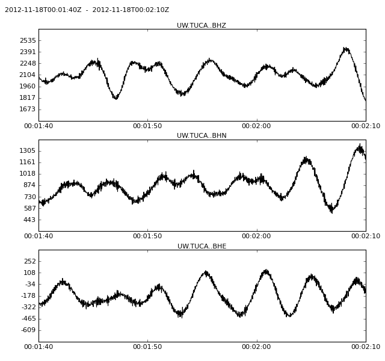

| copyright: | The ObsPy Development Team (devs@obspy.org) & Victor Kress |
|---|---|
| license: | GNU General Public License (GPLv2) (http://www.gnu.org/licenses/old-licenses/gpl-2.0.html) |
getWaveform(): The following example illustrates how to request and plot 30 seconds of all three broadband channels ("BH*") of station "TUCA" of the Pacific Northwest Seismic Network ("UW").
>>> from obspy.earthworm import Client
>>> client = Client("pele.ess.washington.edu", 16017)
>>> response = client.availability("UW", "TUCA", channel="BHZ")
>>> print response
[('UW',
'TUCA',
'--',
'BHZ',
UTCDateTime(2011, 11, 27, 0, 0, 0, 525000),
UTCDateTime(2011, 12, 29, 20, 50, 31, 525000))]
>>> t = response[0][4]
>>> st = client.getWaveform('UW', 'TUCA', '', 'BH*', t + 100, t + 130)
>>> st.plot()

| client.Client | A Earthworm Wave Server client. |